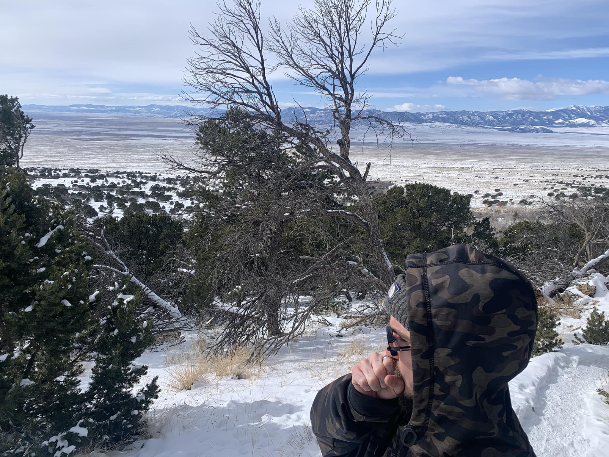

Herbalist, Musician, Creator

Driven by my plentiful passions of the Earth and the Stars, my focus lies upon internal and external healing,
devoting myself to those I love and the community abound.
"We can only admire others if we have a sense of our own worthiness, and a developing sense of security about our
own creative energies."
Moore & Gillette